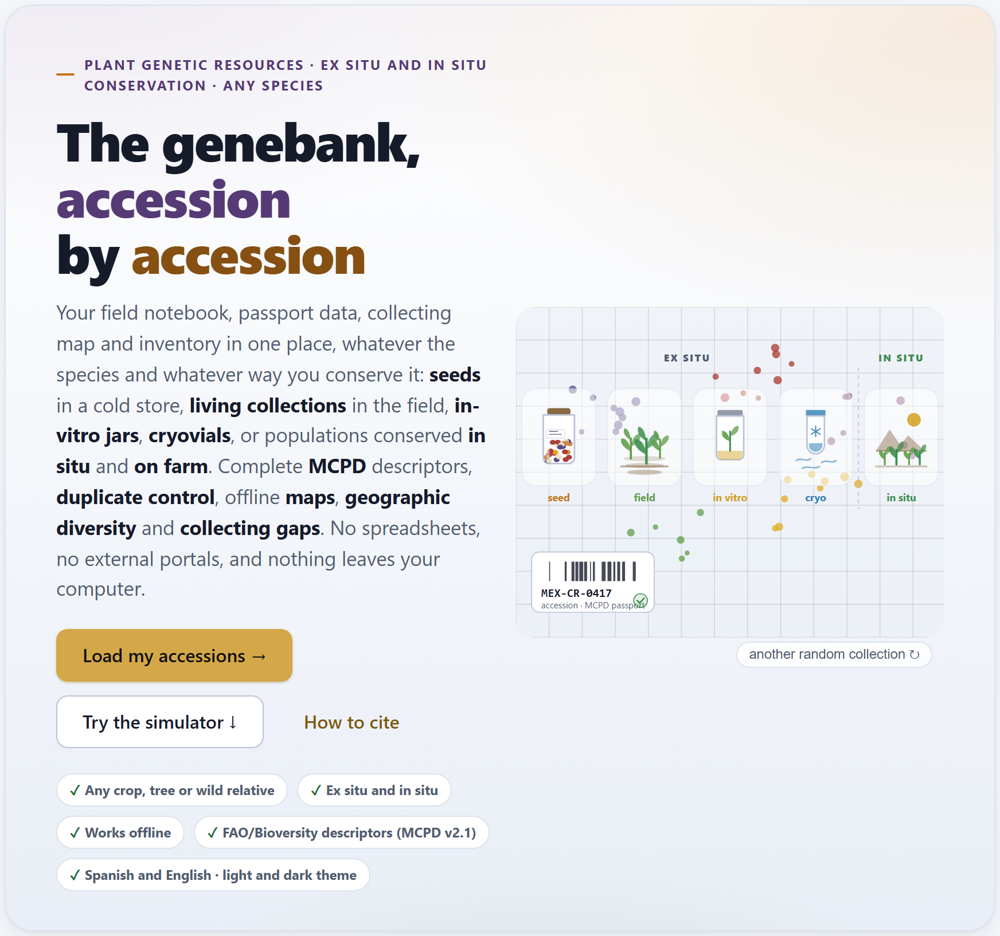
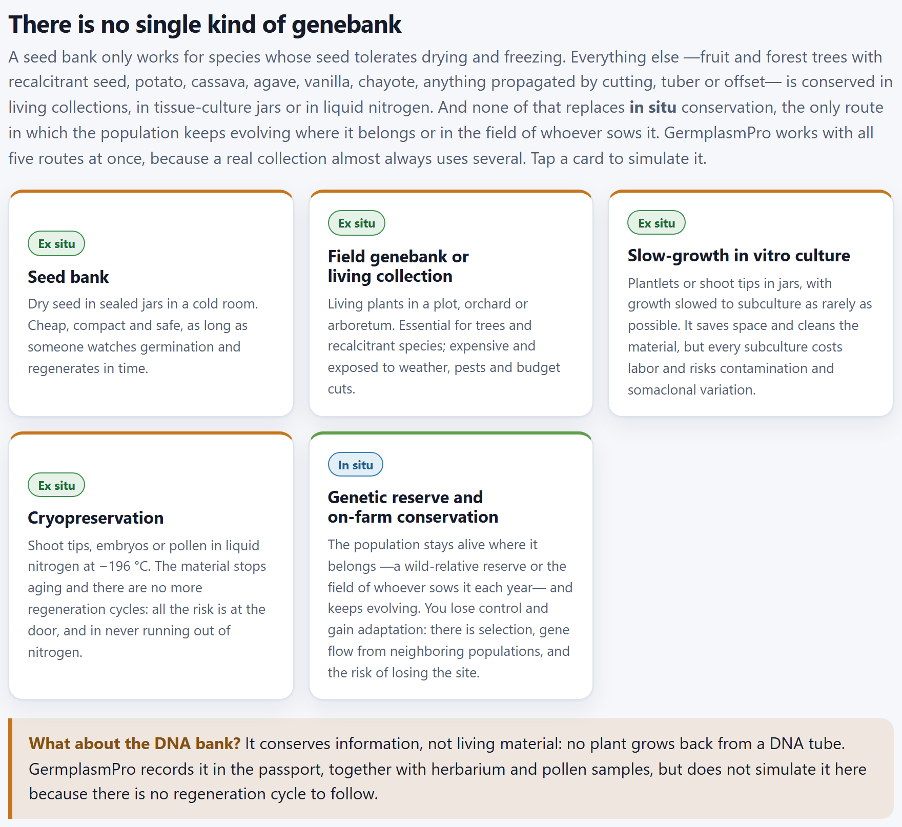
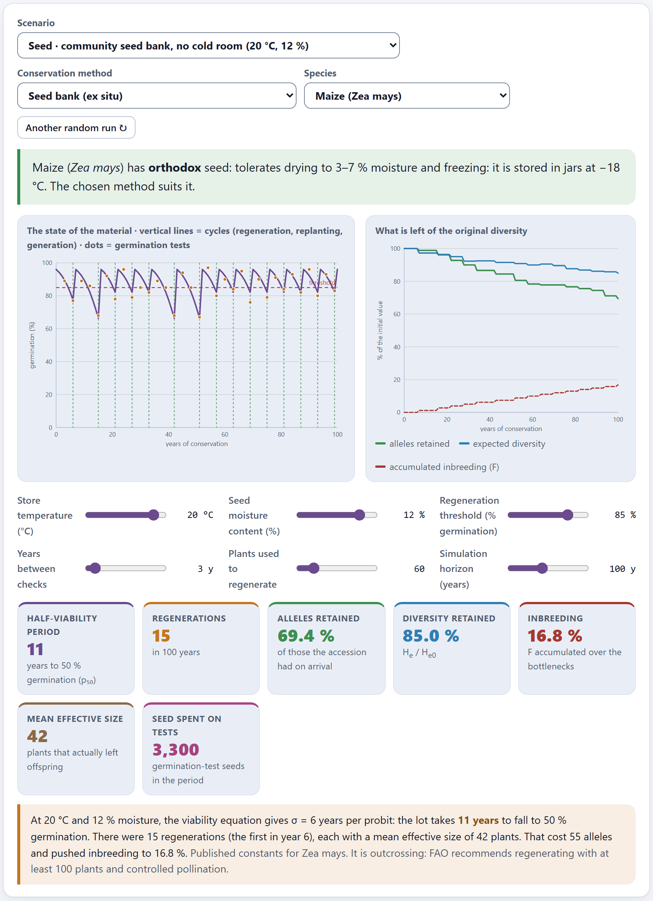
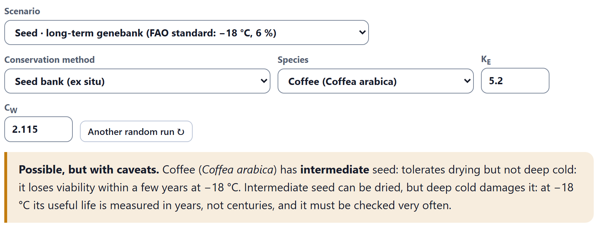
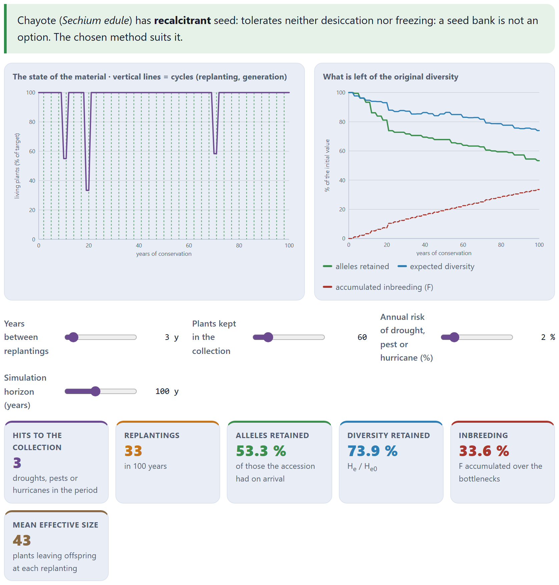
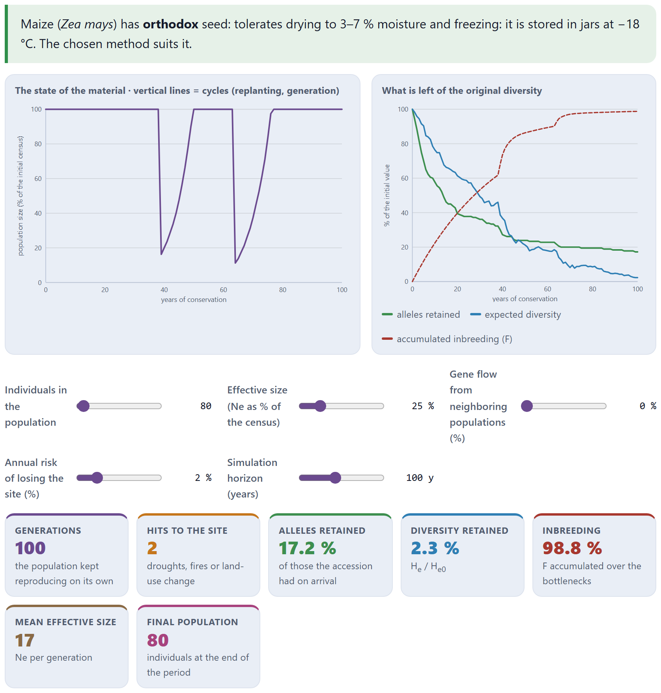
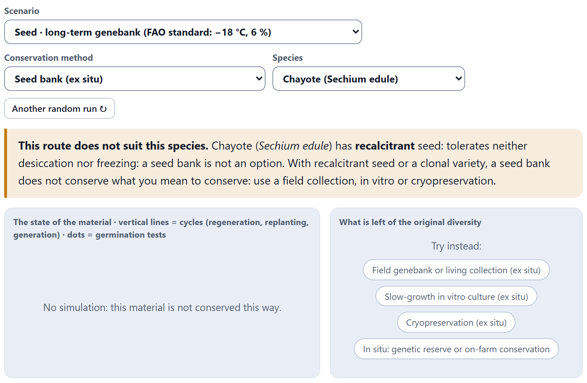
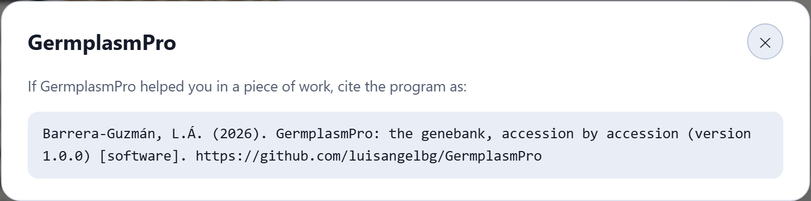

The first screen of the app needs no data. It presents the five kinds of genebank —four ex situ and one in situ—, says which seed behavior each one admits and brings a simulator that follows an accession for decades along the route you choose, with two clocks running: that of the material and that of its genetic diversity. It is the place to understand why a species is conserved the way it is before loading the collection.
When you open index.html, Block 1 appears. At the top, in small capitals, the scope of the program —Plant genetic resources · ex situ and in situ conservation · any species— and, in large type, its motto: “The genebank, accession by accession”. The paragraph below sums up the promise: the field notebook, the passport data, the collecting map and the inventory of the collection in one place, whatever the species and whatever the way of conserving it, with no loose spreadsheets, no external portals and without the data leaving the computer.

Three buttons lead in. Load my accessions → takes you to Block 2, where the work with your collection begins; Try the simulator ↓ scrolls down to this block’s simulator (Section 1.4), and How to cite opens the box with the citation of the program (Section 1.8). Below, five badges sum up what the program guarantees: Any crop, tree or wild relative; Ex situ and in situ; Works offline; FAO/Bioversity descriptors (MCPD v2.1), and Spanish and English · light and dark theme.
The illustration is drawn by the program itself. The four ex situ routes are to the left of a dotted line and the in situ route, to the right; the collecting points cluster in five groups, as collections really cluster along roads and valleys. The label at the bottom (MEX-CR-0417 · accession · MCPD passport) is decorative: it does not correspond to any accession of the example collection. The another random collection ↻ button redraws the scene with other points.
It is the only block that does not use the passport. Nothing you do here is saved, changes the collection or goes into the report of Block 10. That is why it is best used for thinking: change one control at a time and see what happens to the accession.
The section There is no single kind of genebank starts with the essentials: a seed bank only works for species whose seed tolerates drying and freezing. Trees with recalcitrant seed and everything propagated by cutting, tuber or offset —potato, cassava, agave, vanilla, chayote— are conserved alive, in jars or in liquid nitrogen, and none of that replaces in situ conservation. Five cards present the routes; each one carries its Ex situ or In situ badge.

| Card | What it is | Its weak point |
|---|---|---|
| Seed bank ex situ | Dry seed in sealed jars, in a cold room. Cheap, compact and safe. | It only lasts if someone watches germination and regenerates in time. |
| Field genebank or living collection ex situ | Living plants in a plot, an orchard or an arboretum. Essential for trees and recalcitrant species. | Expensive and exposed to the weather, to pests and to budget cuts. |
| Slow-growth in vitro culture ex situ | Plantlets or shoot tips in jars, with growth slowed down to subculture as rarely as possible. It saves space and cleans the material. | Every subculture costs labor and risks contamination and somaclonal variation. |
| Cryopreservation ex situ | Shoot tips, embryos or pollen in liquid nitrogen at −196 °C. The material stops aging and there are no more regeneration cycles. | All the risk lies at the entry (how much regrows after thawing) and in never running out of nitrogen. |
| Genetic reserve and on-farm conservation in situ | The population stays alive in its own site —a reserve of crop wild relatives or the field of whoever sows it each year— and keeps evolving. | Control is lost: there is selection, gene flow from neighboring populations and the risk that the site disappears. |
The two faces of in situ —the genetic reserve of crop wild relatives and on-farm conservation, in the fields of custodian families— share a card and a model in the simulator, because they are driven by the same dynamics: a population that reproduces on its own, with drift, gene flow and the risk of losing the site. In the passport, on the other hand, they are recorded separately (Chapter 2), and that is why the portrait of the example collection counts six routes (Figure I.3).
When you click a card, the app picks the first ready-made scenario for that route (Table 1.3), loads it into the simulator and scrolls down to it: Seed bank opens the FAO standard with maize; Field genebank, chayote; In vitro culture and Cryopreservation, potato, and In situ, the maize landrace in the farmer’s field.
Below the cards, a box makes it clear: the DNA bank conserves information, not living material —no plant grows from a tube of DNA—. GermplasmPro records it in the passport, together with herbarium and pollen samples, but does not simulate it, because there is no regeneration cycle to follow. That is why the introduction speaks of “five kinds of genebank”: the sixth exists, but only as a record.
Which route suits a species depends, first of all, on how its seed behaves when dried and cooled, and on whether the variety to be conserved reproduces by seed or is a clone. The app distinguishes four behaviors, with the same sentence it shows in the simulator’s verdict:
| Behavior | What the app says |
|---|---|
| Orthodox | Tolerates drying to 3–7 % moisture and freezing: it is stored in jars at −18 °C. |
| Intermediate | Tolerates drying but not deep cold: it loses viability within a few years at −18 °C. |
| Recalcitrant | Tolerates neither desiccation nor freezing: a seed bank is not an option. |
| Vegetatively propagated | Its seed does not reproduce the genotype to be conserved, because the variety is a clone. |
With these four behaviors the app decides, for each pair of species and route, whether the route suits it, whether it is possible with caveats or whether it does not suit it. Table 1.1 gathers those decisions; they are what produce the verdicts of Section 1.7.
| Behavior | Seed | Field | In vitro | Cryo | In situ |
|---|---|---|---|---|---|
| Orthodox | ✓ | ✓ | ! | ✓ | ✓ |
| Intermediate | ! | ✓ | ✓ | ✓ | ✓ |
| Recalcitrant | ✗ | ✓ | ✓ | ✓ | ✓ |
| Vegetatively propagated | ✗ | ✓ | ✓ | ✓ | ✓ |
The two caveats have their reasons. Intermediate seed can be dried, but in a store at −18 °C its useful life is measured in years, not centuries, and it has to be checked very often. And for a species with orthodox seed the in vitro jar works, but it is an unnecessary expense: the seed bank does the same job for a fraction of the cost.
The Species selector has fifteen entries: fourteen species that illustrate the four behaviors and a generic entry for yours. It is not a closed catalog of what the app can handle —the passport accepts any taxon—, but real cases so that the simulator has something to work with. Each species carries a note that appears below the results.
| Species | Seed | The app’s note, in brief |
|---|---|---|
| Other species (choose its behavior) | whichever you choose | Declare how your species behaves and, if it goes to a seed bank, enter its viability constants before deciding anything with the years that come out. |
| Maize (Zea mays) | orthodox | Published constants. Outcrossing: regenerate with at least 100 plants and controlled pollination. |
| Common bean (Phaseolus vulgaris) | orthodox | Self-pollinating: fewer plants are enough, but it is best to harvest plant by plant. |
| Squash (Cucurbita pepo) | orthodox | Outcrossing, with specialist pollinators: isolation or hand pollination. |
| Chilli pepper (Capsicum annuum) | orthodox | Self-pollinating with appreciable natural outcrossing: regenerate under insect-proof mesh. |
| Wheat (Triticum aestivum) | orthodox | The easiest case for a seed bank. |
| Coffee (Coffea arabica) | intermediate | Freezing kills it: it is conserved in the field, in vitro or cryopreserved. |
| Avocado (Persea americana) | recalcitrant | Living field collection; elite germplasm as grafted clones. |
| Cacao (Theobroma cacao) | recalcitrant | Field collections backed up in vitro and by cryopreserved shoot tips. |
| Chayote (Sechium edule) | recalcitrant | It germinates inside the fruit: field genebank or in vitro, with periodic replanting. |
| Oak (Quercus spp.) | recalcitrant | Conservation starts in situ, in seed stands and reserves. |
| Potato (Solanum tuberosum) | vegetative | The variety is a clone: in vitro and cryopreserved, with a field backup. |
| Cassava (Manihot esculenta) | vegetative | Propagated by stem cuttings: field and in vitro, with cryo as backup. |
| Agave (Agave spp.) | vegetative | Cultivars kept as offsets; many wild populations only in situ. |
| Vanilla (Vanilla planifolia) | vegetative | Narrow genetic base: in vitro, shaded field plots and in situ conservation of its relatives. |
Only with Other species (choose its behavior) does the Its seed is selector appear, with the four options above; for the other species the behavior is given. Outcrossing and self-pollinating species are not distinguished in the calculation of drift —in all those that reproduce sexually two copies per plant are drawn—; the difference stays in the note, as management advice for regeneration.
The section Try it: the life of an accession, along the route you choose follows an accession for decades with two clocks running, the same as in the fourth idea of the introduction (I.3): that of the material —the germination of the lot, the living plants of the plot, the jars in the laboratory, the explants that regrow after thawing or the size of the population in its site— and that of genetic integrity, because each bottleneck redraws the allele frequencies and takes the rare ones away.

| Control | What it is for |
|---|---|
| Scenario | Loads in one go one of the fourteen ready-made scenarios (Table 1.3): route, species and slider values. |
| Conservation method | The route, in two groups: Ex situ (the first four) and In situ. Changing it changes the sliders. |
| Species | One of the fifteen entries of Table 1.2. |
| Its seed is | Only with Other species: the behavior of your seed. |
| KE and CW | Only in the seed bank and with a species whose viability constants are editable (all seeded species except maize). See Section 1.5. |
| Another random run ↻ | Repeats the simulation with another seed of the random number generator: the regenerations, the tests, the weather hits and the drift change; the parameters do not. |
Below the charts are the route’s sliders, different for each one (Sections 1.5 and 1.6); all of them share the last one, Simulation horizon (years), from 30 to 200 years. Each movement runs the simulation again instantly.
| Scenario | Alleles | He | F | And also |
|---|---|---|---|---|
| Seed · long-term genebank (FAO standard: −18 °C, 6 %) | 100.0 % | 100.0 % | 0.0 % | p₅₀ 883 years; no regeneration |
| Seed · medium-term cold room (5 °C, 8 %) | 98.3 % | 96.2 % | 1.9 % | wheat; p₅₀ 117 years; 3 regenerations in 200 years |
| Seed · community seed bank, no cold room (20 °C, 12 %) | 69.4 % | 85.0 % | 16.8 % | p₅₀ 11 years; 15 regenerations |
| Seed · the same community bank with no germination test for 15 years | 59.4 % | 79.2 % | 20.9 % | 6 regenerations with a mean Ne of 14 |
| Seed · good cold room, but regenerated with 25 plants | 80.0 % | 91.8 % | 7.6 % | 3 regenerations with a mean Ne of 19 |
| Field · chayote, recalcitrant, replanted every 3 years | 53.3 % | 73.9 % | 33.6 % | 33 replantings, 3 hits |
| Field · cacao tree collection, renewed every 25 years | 46.7 % | 74.3 % | 28.7 % | 4 replantings, 3 hits |
| In vitro · potato under slow growth, subcultured every 12 months | 100.0 % | 100.0 % | 0.0 % | 50 subcultures, 1,000 jars; fidelity 77.8% |
| In vitro · the same potato, but subcultured every 3 months | 100.0 % | 100.0 % | 0.0 % | 200 subcultures, 4,000 jars; fidelity 36.7% |
| Cryo · potato shoot tips in liquid nitrogen | 100.0 % | 100.0 % | 0.0 % | 100 of 200 explants recovered |
| Cryo · the same potato, but with only 30 explants frozen | 100.0 % | 100.0 % | 0.0 % | 12 of 30 recovered |
| In situ · maize landrace in the farmer’s field (on-farm) | 100.0 % | 97.1 % | 4.4 % | mean Ne 136; 3 hits |
| In situ · the same field, isolated and short of seed (no gene flow) | 17.2 % | 2.3 % | 98.8 % | mean Ne 17; 2 hits |
| In situ · oaks in a crop-wild-relative reserve | 100.0 % | 99.7 % | 0.3 % | mean Ne 777; 1 hit |
The scenarios come in pairs on purpose: the same material with only one thing changed. Compare the community bank that tests every 3 years with the one that lets 15 go by; the good cold room that regenerates with 100 plants with the one that regenerates with 25; the potato subcultured every year with the one subcultured every three months; the 200 explants with the 30; the connected field with the isolated one. In each pair, what is lost is explained not by time but by management. In the potato pairs, since potato is a clone, no alleles are lost: what management changes is the fidelity, the labor and how much material is left so as not to lose the whole accession.
The simulated accession starts with 30 loci of six alleles each, with frequencies ranging from common to rare (about 0.45, 0.22, 0.15, 0.09, 0.06 and 0.03, with a small random variation between loci). Each time it passes through a bottleneck, the app redraws the frequencies with 2Ne copies, two for each plant, jar or explant that passes on to the next cycle. In a clonal accession —potato, cassava, agave, vanilla or an Other species declared vegetatively propagated— there is nothing to draw: cuttings, jars and cryovials are copies of the same genotype, and in the field, in vitro and in cryo its alleles, its diversity and its F stay at 100, 100 and 0%. The only thing that puts a clone at risk is running out of material. An allele with a frequency of 0.03 has a good chance of not turning up in a small draw, and once lost it does not come back: that is why alleles are lost earlier and faster than expected diversity, which gives little weight to the rare ones. Inbreeding grows with each cycle:
Hence the genebank rule: few cycles, each with many individuals. In situ the same happens in every generation, but gene flow from neighboring populations brings back part of what was lost (Section 1.6).
In the seed bank, the clock of the material is the Ellis and Roberts viability equation (1980): from the store temperature and the seed moisture it gives how long the lot takes to lose germination. The simulator applies it year by year to a lot that enters with 96% germination and 2,500 seeds, and combines it with the genebank’s germination tests and regenerations.
The germination of a lot does not fall in a straight line: the seeds die over time following a normal distribution, which is why the equation is written in probits, units of normal deviation. v is the viability in probits after p days; Ki, the initial viability of the lot in probits (96% is equivalent to 1.7507); σ, the days it takes viability to fall by one probit. The expected germination is Φ(v), the cumulative normal probability.
σ depends on the seed moisture m (% fresh weight) and on the temperature t (°C). KE and CW are specific to each species; CH = 0.0329 and CQ = 0.000478 describe the effect of temperature and hold for many orthodox species, so the app keeps them fixed. Since the moisture term is a logarithm, lowering moisture from 12 to 6% multiplies σ by 22.115 ≈ 4.3; lowering the temperature from 20 to −18 °C multiplies it by about 19, and both together, by 84: from 6 to 505 years per probit.
| Slider | Range | What it controls |
|---|---|---|
| Store temperature (°C) | −20 to 25 | t in the equation. |
| Seed moisture content (%) | 3 to 14 | m in the equation, in steps of half a point. |
| Regeneration threshold (% germination) | 50 to 95 | If a test gives less, the lot is regenerated. It is the red line on the chart. |
| Years between checks | 1 to 30 | How often a germination test is done, with 100 seeds. |
| Plants used to regenerate | 10 to 300 | The seeds sown at each regeneration. |
Each test uses 100 seeds and its result carries the sampling error of a real count (that is why the dots do not fall exactly on the curve). The lot is regenerated when a test falls below the threshold or when the stock drops to 400 seeds. At regeneration, the live fraction of what is sown germinates at random; 90% of the plants that emerge leave offspring —that is the Ne of the cycle—, and the new lot goes back to 96% germination with as many seeds as those plants yield. If fewer than two emerge, the lot is lost.
The seven tiles of this route are Half-viability period (the years to 50% germination, p₅₀; above 999 it is written >999), Regenerations within the horizon, the three for diversity, Mean effective size of the regenerations and Seed spent on tests. The reading adds two warnings: if checks are every 10 years or more, and if regeneration uses 30 plants or fewer.
The scenario of the community seed bank without a cold room: maize at 20 °C with 12% moisture, constants KE = 6.474, CW = 2.115.
| log10 12 = 1.07918 | CW log10 m = 2.115 × 1.07918 = 2.28247 |
| CH t = 0.0329 × 20 = 0.65800 | CQ t² = 0.000478 × 400 = 0.19120 |
| log10 σ = 6.474 − 2.28247 − 0.65800 − 0.19120 = 3.34233 → σ = 103.34233 = 2,199.5 days = 6.02 years per probit | |
| Ki = Φ−1(0.96) = 1.7507 · at 50%, v = 0 → p₅₀ = 1.7507 × 6.02 = 10.54 years | |
| at 85%, v = Φ−1(0.85) = 1.0364 → p = (1.7507 − 1.0364) × 6.02 = 4.30 years | |
| after 3 years: v = 1.7507 − 3/6.02 = 1.2525 → 89.5% · after 6 years: v = 0.7544 → 77.5% | |
The app writes σ = 6 years per probit and a half-viability period of 11 years (10.54 rounded). The lot crosses the 85% threshold at 4.3 years, but with tests every 3 years the year-3 test still gives about 89%, and it is the year-6 test that detects it, with the lot already at 77.5%: that is why the first of the 15 regenerations falls in year 6. With the same calculation, the FAO standard (−18 °C, 6%) gives log10 σ = 6.474 − 1.6458 + 0.5922 − 0.1549 = 5.2655, σ = 504.6 years per probit and p₅₀ = 1.7507 × 504.6 = 883 years, the figure in the tile; in 100 years the lot only drops to 94%.
Only maize comes with published constants (KE = 6.474, CW = 2.115), and with it the KE and CW boxes do not appear. For the other species that can go to a seed bank —common bean, squash, chilli pepper, wheat, coffee and Other species— the boxes appear next to the species selector and start with the maize values, except coffee, which starts with KE = 5.2 to reflect its short life. In other words: the wheat in the medium-term scenario ages like a maize until you give it its own constants.

The What runs where section of the home page warns about it: for any species other than maize, KE and CW are a starting point. Take them from Kew’s Seed Information Database or from the literature on your species before using the simulator’s years to schedule a regeneration. What does hold without them is the shape of the responses: how much a lot gains by lowering moisture or temperature, and how much it costs to check late or to regenerate with few plants.
On the routes without stored seed there is no viability equation: the clock of the material is a different one on each. What does not change is the genetic clock, which runs with the same drift as in the box of Section 1.4.
A living collection does not age in a jar: it ages in the plot. Every year there is a probability of a hit —drought, pest or hurricane— that kills between 30 and 70% of the plants; every so many years the collection is renewed, and at that replanting 75% of the remaining plants leave offspring. Afterwards the plot returns to its number of plants. Replanting from seed redraws the genes of those plants; in a clone, which is replanted from cuttings, tubers or offsets, replanting copies the same genotype and takes no alleles away: only the hits that can leave the plot without plants count.
| Slider | Range | What it controls |
|---|---|---|
| Years between replantings | 1 to 30 | How often the plot is renewed. |
| Plants kept in the collection | 10 to 300 | The target number of living plants. |
| Annual risk of drought, pest or hurricane (%) | 0 to 15 | The probability of a hit each year. |
The tiles specific to this route are Hits to the collection, Replantings and Mean effective size. The left chart shows the living plants as a percentage of the target: each drop is a hit, and the line returns to 100 at the next replanting.

The reading puts it bluntly: here the enemy is not storage time, but how often the plot is renewed, how big it is and luck. The cacao scenario shows it from the other side: renewing every 25 years seems cheap, but three hits before the first renewal (in years 12, 18 and 21) leave only 2 of the 40 trees to renew it in year 24: in that single step the collection drops to 46.7% of its alleles, and the three following renewals, with 30 trees, no longer take any away. That is why the app insists that a field genebank always needs a backup: in vitro, cryopreservation or a second site.
Here the clock of the material is genetic fidelity. Each subculture leaves behind part of the true-to-type material through somaclonal variation (the app assumes 0.5% per pass, a fixed value that has no slider) and loses jars to contamination or poor rooting; those that survive are multiplied until the number of lines is restored. With 50 passes, fidelity ends at 0.99550 = 77.8%; with 200, at 36.7%. In a clone such as potato, losing jars does not change the accession’s alleles —all the lines are the same genotype—, so the diversity tiles stay at 100% and inbreeding at 0%. If the species reproduces sexually (a maize or a coffee in a jar), each pass does redraw the genes of the surviving lines, two copies per line, and diversity drops: maize with 20 lines and yearly subculture keeps 19.4% of its alleles in 100 years.
| Slider | Range | What it controls |
|---|---|---|
| Months between subcultures | 2 to 24 | How often the material is moved to fresh medium. |
| Jars (lines) per accession | 5 to 60 | How many lines are maintained. |
| Jars lost per subculture (%) | 0 to 20 | The loss to contamination at each pass. |
The tiles specific to this route are Subcultures, Genetic fidelity and Jars handled, which measures the laboratory’s work: 1,000 jars in 50 years with yearly subculture and 20 lines, 4,000 if subcultured every three months. The reading recalls that lengthening the interval —with lower temperature, less light or osmotic media— is the only way to bring that cost down, and that the definitive backup is cryopreservation.
At −196 °C the material does not age, so the only bottleneck is the entry: of the explants that are frozen, only some regrow after thawing, and those are the accession that remains. If the material is a clone, that bottleneck takes no alleles away: the explants are copies of one genotype and it only decides whether there is material left to regrow. If they are embryos or pollen of a sexually reproducing species, on the other hand, the draw happens just once, in year 0, and inbreeding stays at 1/(2N), with N the explants recovered. Afterwards, the only thing that can happen is that the tank or the nitrogen supply fails, and then everything is lost.
| Slider | Range | What it controls |
|---|---|---|
| Explants frozen | 10 to 500 | How many shoot tips or embryos go into the nitrogen. |
| Recovery after thawing (%) | 5 to 95 | What fraction regrows. |
| Tank failure risk (per thousand years) | 0 to 20 | The annual probability, per thousand, of losing the tank. |
The tiles specific to this route are Explants recovered, Regeneration cycles (always 0) and Tank failures. The chart of the material is a flat line at the height of the recovery, which falls to zero if the tank fails. The two potato scenarios keep 100% of the alleles —it is a clone—, but they are not worth the same: with 200 explants and 50% recovery, 100 plants are left to regrow; with 30 and 40%, only 12. The app’s reading puts it this way: all the risk is at the entry and in the nitrogen supply, so it pays to freeze enough explants and to work on the protocol until recovery goes up.
The population lives in its site and reproduces on its own, one generation per year. In each generation there is drift with the effective size (a fraction of the census), and then gene flow arrives from neighboring populations, bringing back the frequencies of the regional gene pool. Every year there is also the risk of a hit to the site —drought, fire, land-use change, the variety no longer being sown— that takes between 40 and 100% of the population; if it survives, it recovers little by little, 15% per year, up to its usual census.

With migration m, the two genes of an individual come from resident parents with probability (1 − m)², so inbreeding does not grow without limit: it settles at an equilibrium between drift and migration. Without gene flow (m = 0), the formula goes back to the one in the box of Section 1.4.
| Slider | Range | What it controls |
|---|---|---|
| Individuals in the population | 20 to 3,000 | The usual census. |
| Effective size (Ne as % of the census) | 5 to 100 | What part of the census really leaves offspring. |
| Gene flow from neighboring populations (%) | 0 to 30 | m, per generation. |
| Annual risk of losing the site (%) | 0 to 10 | The probability of a hit each year. |
The tiles specific to this route are Generations, Hits to the site, Mean effective size and Final population. The reading changes depending on whether there is gene flow —conserving in situ means conserving a network of populations, not a single plot— and always closes with the same idea: it is the only route in which the accession keeps evolving and keeps its associated knowledge; what is gained in adaptation is lost in control, and that is why in situ and ex situ are complementary, not alternatives.
It is a model for understanding, not for forecasting a particular accession: the initial diversity is that of 30 imaginary loci, the initial germination of the lot (96%) and its initial stock are fixed, and there is neither natural selection nor mutation. Its figures serve to compare management options with one another. Decisions about real lots are made in Block 8, with your tests and your regenerations.
Above the charts, a box always says what type of seed the chosen species has and whether the route suits it. It takes three forms, which come from Table 1.1:

Only the seed bank can be blocked: with recalcitrant seed or with a clonal variety, the app replies that the seed bank does not conserve what you mean to conserve and proposes field, in vitro or cryopreservation. This happens with avocado, cacao, chayote and oak (recalcitrant), with potato, cassava, agave and vanilla (vegetative), and with Other species when you choose recalcitrant or vegetatively propagated in Its seed is.
Between the cards and the simulator, the strip The life of an accession sums up in seven steps the order in which the work on a collection happens: Collect (site, elevation, informant), Register (MCPD passport), Clean (errors and duplicates), Map (maps and grids), Analyze (diversity and gaps), Conserve (whichever route each species needs) and Deliver (labels and report). They are Blocks 2 to 10 grouped by what they solve; Figure I.4 of the introduction draws the same path block by block.
After the simulator, the section The ten blocks recalls that all ten are ready —you can enter any of them from there or from the sidebar— and brings nine cards, from Block 2 to Block 10, with the name of the block and a line on what it does; a click takes you to the block. The same list, with the question each block answers, is in Section I.2.
The What runs where card repeats what you already know from the introduction —everything is computed in the browser, nothing is uploaded, the maps work offline, and the app opens with a double click or with Open GermplasmPro.bat— and adds two boxes: the warning about the viability constants from Section 1.5, and an idea that sums up the program: the same accession written in three ways, a coordinate with the sign flipped, a lot that has gone twelve years without a germination test or an in situ plot nobody visits cannot be seen in a sheet with a thousand rows.
The list Where the methods come from gives the six sources of the block: the Ellis and Roberts equation (1980); FAO’s genebank standards (2014) for seed, field, in vitro and cryopreservation; the MCPD v2.1 descriptors (Alercia, Diulgheroff and Mackay, 2015); the review by Engels and Ebert (2021) of the global ex situ conservation system; the book by Maxted, Dulloo and Ford-Lloyd (2016) on in situ and on-farm conservation, and Kew’s Seed Information Database, for the viability constants and the behavior of each species. Appendix E gives them in full.

It is the same citation as in the credits of this manual and in the CITATION.cff file in the program folder. The program has no digital object identifier: the citation carries the address of the repository. The box closes with its ✕ button or with the Esc key.
| What you see | Why it happens and what to do |
|---|---|
| No simulation: this material is not conserved this way. | The route does not suit the species (Section 1.7). Press one of the buttons under Try instead:. |
| The KE and CW boxes do not appear | They only appear in the seed bank and with species whose constants are editable; with maize they do not, because its constants are the published ones. |
| Its seed is does not appear | It only appears with Other species (choose its behavior). |
| The half-viability period says >999 | The lot takes more than 999 years to reach 50%: the store is very cold or the seed very dry. It is a result, not an error. |
| The figures do not match those in this manual | Another random run ↻ was pressed or a slider was moved. Choose the scenario again or reload the page: the initial run is always the same. |
| The chart of the material has no vertical lines | In in vitro and in cryo the chart never has them. For seed, field and in situ, there are more than 60 cycles within the horizon (as in situ, one generation per year) and the app omits them so that the curve can be read. |
| If you do not know which route suits a species | then choose it in Species (or use Other species and declare its seed) and try the five routes: the verdict tells you which ones suit it. |
| If you run a seed bank without a cold room | then compare the two community seed bank scenarios: checking often matters as much as temperature. |
| If you are going to use the seed bank years for planning | then first enter the KE and CW constants of your species; only those of maize come published. |
| If a figure changes a lot with Another random run ↻ | then the result depends on luck (hits, few individuals): run it several times and look at the range, not at one number. |
| If you already have your list of accessions | then Load my accessions → and go on to Chapter 2. |
Nothing done in Block 1 affects the collection: the simulator keeps no state and does not go into the report.